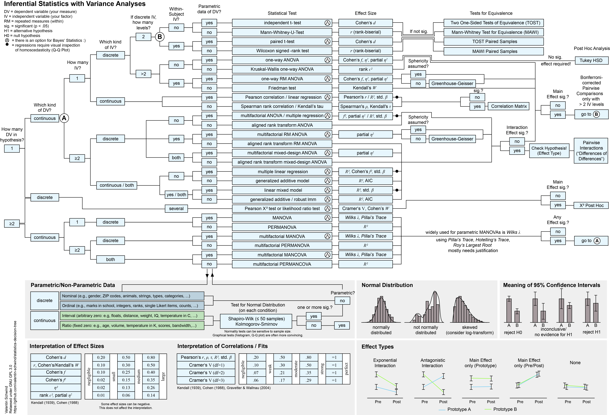

HOME >> HCI User Studies Toolkit
Statistical Decision Tree
Explore a visual decision aid for inferential statistics and null hypothesis significance testing in HCI research. This page provides the decision tree directly in the browser together with downloadable PDF, SVG, PNG and JPG versions for teaching, study planning and quick reference.
The infographic is meant as orientation support for students and novice researchers. It does not replace statistical training, method consultation or supervision for study-specific analysis decisions.
Decision Tree
Move your cursor over the graphic to inspect details with the built-in zoom lens, or open one of the downloadable formats below for full-size viewing.

Downloads
Choose the format that best fits your workflow, whether you need a print-ready PDF, editable vector graphic or bitmap export.
PDF Version
Print-friendly document format for teaching materials, handouts and offline sharing.
SVG Version
Scalable vector graphic for high-resolution display and further editing in design tools.
{kind=link}
{kind=link}
{kind=link}
Source Code
Public source repository for the browser-based Statistical Decision Tree page.
Statistical Decision Tree Repository
Source code on GitHub for the current browser-based Statistical Decision Tree and its downloadable assets.